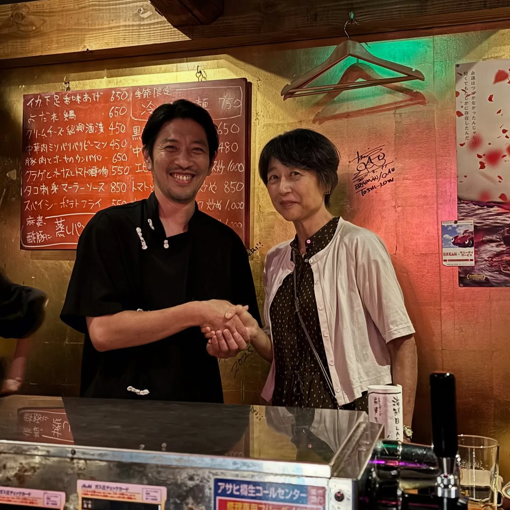
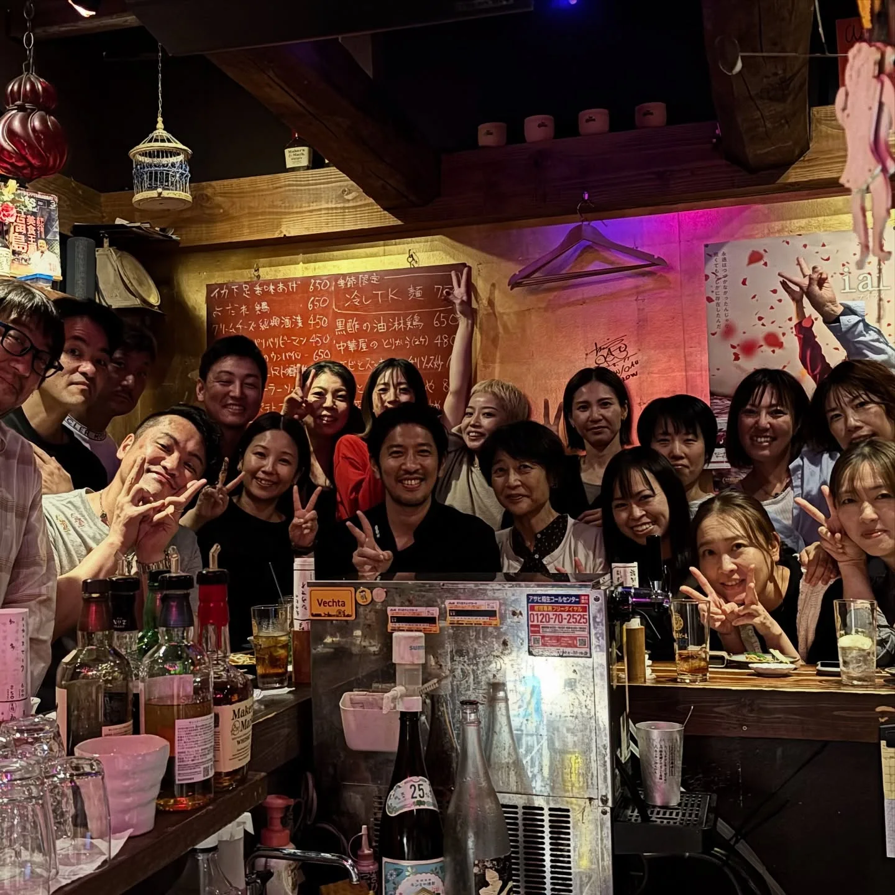

2025年9月27日
また夢叶いました！


また夢叶いました！ 高校の三年生の時の担任の先生にご来店！ タイムスリップ！フラッシュバック✨ 今年一、ブチ上がりました！感動しました！！ 嬉しい、、、 夢か！！！ 僕が在学してた時に先生は、 『人の目をきにするな！！』 という言葉をよく言ってはった先生で、 すごくサバサバした先生でカッコよくて、 本当に好きな先生でした！ その言葉が３０年弱たった今でも僕の指針になっております！！ 人の目を気にせず奇抜な店やってます、、、 そして、みんな忙しいにも関わらず、 福島まで同級生が来てくれたことに感謝いたします！ 全員43,43歳😂 今日だけではなく、有馬は本当に人に恵まれていると痛感する日々この頃。 お客様商売をしている喜びを感じた一日。 今後も頑張っていきますので、 色々な方にご来店いただいたら幸いです！！ 明日は休みだ！ 来週からお待ちしてまーす🍺 #東淀川高校はaikoさんの母校ですよ